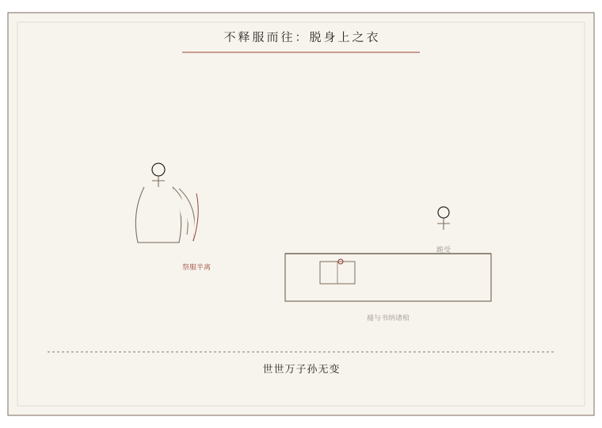

檀弓下 · 四·五十四 · 第 379 课
卫有大史曰柳庄，寝疾。公曰：「若疾革，虽当祭必告。」公再拜稽首，请于尸曰：「有臣柳庄也者，非寡人之臣，社稷之臣也。闻之死，请往。」不释服而往，遂以襚之。与之邑裘氏与县潘氏，书而纳诸棺，曰：「世世万子孙无变也。」
说什么事：卫大史柳庄病重。献公说：若病急，即使在祭祀中也要来告。柳庄果在公祭时卒，来告。公再拜稽首，向尸请示：「有臣柳庄，不是寡人之臣，是社稷之臣。听说他死了，请让我去。」于是不脱祭服就去了，把身上的祭服脱下来赠给他敛。又赐给他裘氏邑与县潘氏，把赐辞写下来放进棺中：「世世万子孙，永不变更。」
落在哪一层：以「不释服」示重。礼之厚，不在物之贵，在事之急。
为何编在此位：上节柳庄谏君勿私赏，此节君以私厚待柳庄之死。一谏一报，见君能受言。
【经】卫有大史曰柳庄，寝疾。公曰：「若疾革，虽当祭必告。」公再拜稽首，请于尸曰：「有臣柳庄也者，非寡人之臣，社稷之臣也。闻之死，请往。」不释服而往，遂以襚之。与之邑裘氏与县潘氏，书而纳诸棺，曰：「世世万子孙无变也。」
【注】革，急也。／急吊贤者。／脱君祭服以襚臣，亲贤也。所以此襚之者，以其不用袭也，凡襚以敛。／所以厚贤也。裘、县潘，邑名。
【疏】此一节论君急吊臣之事。／柳庄为卫大史。今寝疾，其家自告，公报之曰：「若疾急困，虽当我祭，必须告也。」其后柳庄果当公祭之时卒，而来告公。公祭事虽了，与尸为礼未毕，公再拜稽首，请于尸曰：有臣柳庄也者，才能贤异，非唯寡人之臣，乃是社稷之臣。今闻之身死，请往赴之。又不释祭服，即往哭，遂以所著祭服脱而襚之。又与之采邑，曰裘氏及县潘氏。与二邑，又书录其赏辞而纳之棺，云：世世恒受此邑，至万世子孙，无有改变。案《礼》：君入庙门，全为臣，请尸得言「寡人」者，是后人作记者之言也。／案《士丧礼》「君使人襚」，不云祭服襚臣。今君以祭服襚，故云「亲贤也」。得以祭服襚之者，《礼》：诸侯玄冕祭庙，大夫自玄冕而下，以其俱是玄冕，故得襚也。祭服既尊，得以襚臣者，以其臣卑，不敢用君襚衣而袭之也。所以不用袭者，袭是近尸形体，事亵恶，故不敢用君之襚衣也。
大史 掌书记、典册之官。
寝疾 卧病。
疾革 病危。革，急。一本作「亟」。
当祭 正在祭祀之时。
再拜稽首 最重之拜礼。
请于尸 向尸请示。祭时以人代死者受享，谓之尸。
社稷之臣 属于国家而非属于君主一人之臣。
不释服 不脱祭服。
襚 赠衣以敛死者。
裘氏、县潘氏 二邑名。
书而纳诸棺 把赐邑之辞写下，放入棺中。
卫国有大史名柳庄，病重。献公说：「若病危，即使在祭祀中也要来告我。」后来柳庄果在公祭之时卒，其家来告。公再拜稽首，向尸请示说：「有臣柳庄，不是寡人之臣，是社稷之臣。听说他死了，请让我去。」于是不脱祭服就去了，随即把祭服脱下赠给他敛。又赐他裘氏邑与县潘氏，把赐辞写下放进棺中，说：「世世万子孙，永不变更。」
此章记一次破例：一国之君在祭中离位，穿着祭服去哭一个臣子，还把身上的衣服脱下来。
礼不许，而君行之；礼不许，而《礼记》记之。
第一层 「虽当祭必告」：先立一约 此句是君事先说的。
祭为重事，古礼祭中不告丧。君却先说「必告」——这一句是破例的许可，且是预先给的。
礼之破，若出于临时，则近于情；出于先约，则近于法。 君此举，是先立其法，后行其情。
第二层 「请于尸」：破例也要请示 君要离位，不径去，先向尸请示。
此一动作最见古人之分寸：破例可以，越礼不行。 祭中有尸，尸是此际的尊位；向尸请，是把「我要破例」这件事交由礼自己裁可。
第三层 「非寡人之臣，社稷之臣」 此一句是请辞，也是定评。
疏云：「才能贤异，非唯寡人之臣，乃是社稷之臣。」此语把君臣之私，换成国家之公。
此一换，使君之往不为一臣，而为社稷。 破例的理由，由此公私分明。
第四层 「不释服而往」：礼的时间感 注云「急吊贤者」。
若释服、改服、备礼而后往，则礼全而情失。君取急，舍全。
此一节所立者：有些事，快比全重要。
第五层 「遂以襚之」：脱下自己的 疏辨此襚之特殊：常礼君使人襚，不亲襚；此则君自脱所著之祭服以襚。
「脱」字最重。 所赠者不是库中之衣，是身上之衣。
第六层 「不用袭」：给得体面 疏云：「祭服既尊，得以襚臣者，以其臣卑，不敢用君襚衣而袭之也。所以不用袭者，袭是近尸形体，事亵恶。」
此一层极细：君所赠之衣，不用来贴身。
不是嫌其不洁，是君之衣贴臣之身，于分不安。故受其赠而不用其袭，是小敛陈之、大敛用之——受其厚而不僭其分。
第七层 「书而纳诸棺」 赐邑之辞写下来放进棺里。
此一动作把口头之恩变成身后之据。 口头之恩可改，棺中之书不可改——因为受者已不能再争。
第八层 「世世万子孙无变」 此语是对柳庄的子孙说的，也是对后来的君说的。
礼之厚，最后落在一个「不变」上。 一时的厚待，若下一代便收回，则厚不为厚。
与今日何干 今之厚待下属，多在生时给资源，少在身后给承诺。
此章给一句：厚，要厚到下一代还在。
| 左 | 右 |
|---|---|
| 寝疾 | 病 |
| 虽当祭必告 | 先立一约 |
| 请于尸 | 破例亦请示 |
| 非寡人之臣 | 易私为公 |
| 社稷之臣 | 定评 |
| 不释服而往 | 取急舍全 |
| 以襚之 | 脱身上之衣 |
| 不用袭 | 受厚不僭分 |
| 书纳诸棺 | 恩成身后之据 |
画庙堂内的一角，视点平视。堂上立一人形，身着深色长衣，衣襟敞开一襟，作正脱下外衣之状，衣已半离肩。其前一具薄棺置于地，棺盖未合。棺内放着一卷写好的简册，卷轴微露于棺口。堂侧另有一人形，作跪受之状，双手前伸。不画文字。赭色只用在那卷简册露出的轴端。
